		</div>
				<div id = 'help'>
				<ul>
					<li>
						<em>What is RxNix</em>
						<p>RxNix is a simple semantic medications tool that intefaces with RxNorm - a database developed at the <a href='http://www.nlm.nih.gov/'>National Library of Medicine</a>.</p>
						<a href='http://www.nlm.nih.gov/research/umls/rxnorm/index.html'>About RxNorm</a>
					</li>
						
					<li>
						<em>UMLS</em>
						<p>RxNorm uses the <a href='http://www.nlm.nih.gov/research/umls/'>Unified Medication Language System</a> to enable a variety of systems to communicate with each other.</p> <a href='http://www.nlm.nih.gov/research/umls/quickstart.html'>UMLS Quickstart Guide</a>
					</li>
						
					<li>
						<em>Searching</em>
						<p>You may begin by entering an ingredient, drug name, concept or other in the Search field. The Advanced search page allows filtering on concept titles, <strong>and id conversions from one system (UMLSCUI/NDC/UNII and others) to RXCUI</strong></p>
					</li>
			
					<li>
					<em>About</em>
						<p>Built with <a href='https://github.com/codeforamerica/rxNorm_php'>rxNorm_php</a> api library and <a href='https://github.com/codeforamerica/rxNormRef_php'>rxNormRef_php</a> maintained  by <a href='http://codeforamerica.org'>Code For America.</a>
							</p>
						
					</li>
				</ul>
			</div>
	</div>		
		</body>
</html>